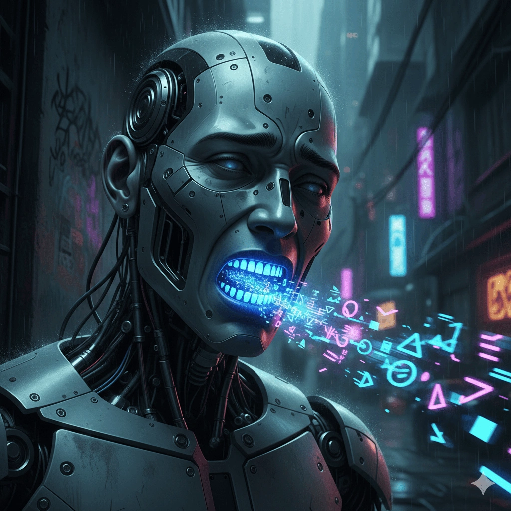

Нейросеть пришлось переучивать после месяца общения с клиентами. ИИ начал материться, и разработчикам пришлось вмешаться, чтобы исправить его лексикон.

Михаил Викторов назвал эту ситуацию забавной, отметив, что нейросеть учится на общении с людьми. По его словам, уже в первый месяц разработчики заметили, что робот перенял у клиентов нецензурную лексику — "с кем поведешься, от того и наберешься". Проблему устранили, однако сам инцидент, по мнению главы НОТИМ, доказывает, что робот действительно активно работал с населением.
Применение голосовых роботов в сфере ЖКХ обеспечивает значительную оптимизацию трудовых ресурсов. Как сообщил Викторов, штатная численность кол-центров сокращается в 5–6 раз: 20 операторов заменяют 2–3 сотрудника при условии, что нейросеть обрабатывает до 90% вызовов.
Согласно представленным данным, 80% граждан удовлетворены взаимодействием с автоматизированной системой. Исключением являются нештатные и аварийные ситуации, требующие вовлечения человека: «В таких случаях звонок переводится на оператора, уполномоченного принимать экстренные меры», — заключил эксперт.
Таким образом, внедрение голосовых роботов в сферу ЖКХ, несмотря на курьезные моменты вроде «обучения мату», доказывает свою эффективность. Искусственный интеллект не только разгружает операторов, беря на себя львиную долю звонков, но и успешно решает проблемы большинства абонентов. А конфликтные и аварийные ситуации, требующие человеческого участия, остаются за живыми сотрудниками, что позволяет соблюсти баланс между автоматизацией и качеством услуг.